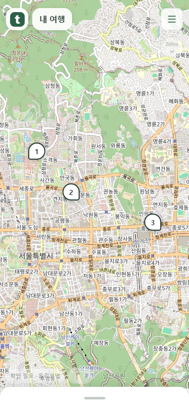
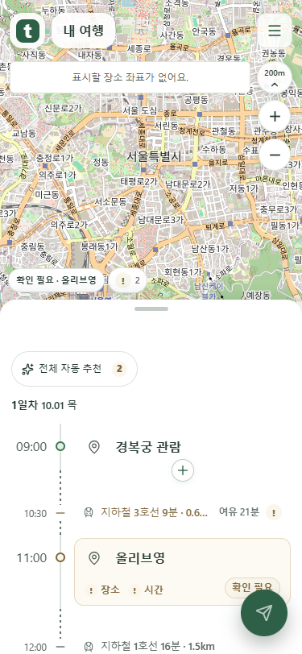
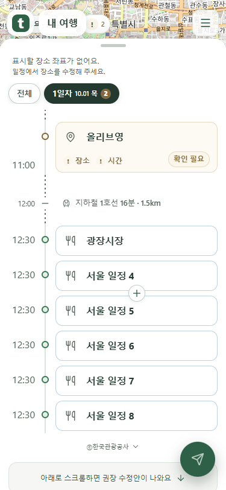
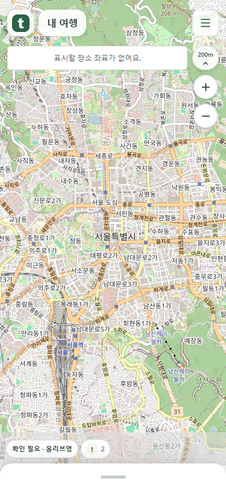

끝까지 내리면 손잡이만 남습니다
실제 화면을 촬영했습니다. 최소 접힘에서는 보내기 버튼도 숨기고, 다시 올리면 목록과 버튼을 복원합니다.
최소 접힘
빈 하단 영역 없이 높이 44px의 손잡이만 남습니다. 조작을 멈추거나 Tab 키를 눌러도 보내기 버튼은 나타나지 않습니다.

좌표 안내는 메뉴 아래
좌표가 없다는 안내가 상단 메뉴와 오른쪽 지도 도구에 가리지 않습니다.

목록을 크게 펼친 경우
지도 공간이 좁아지면 안내를 목록 머리말로 옮깁니다. 스크롤해도 안내를 읽을 수 있습니다.

목록을 접어도 안내 유지
목록을 끝까지 접으면 좌표 안내는 지도 위에서 읽을 수 있습니다. 좌표가 생기면 안내를 지웁니다.

mock 서버 화면 검증 결과입니다. 운영 배포 결과와 구분합니다.